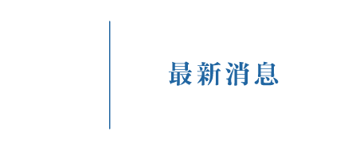
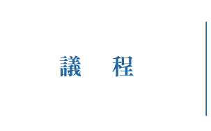
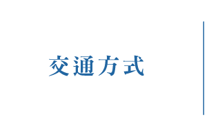
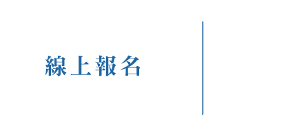
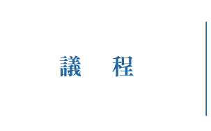
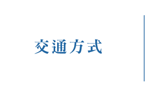
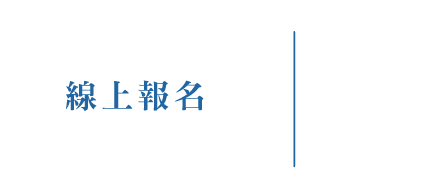

 

發表會簡介 /
為發揚客家文化，同時鼓勵與推動客家相關議題之學術研究風氣，並提升客家研究水平，客家委員會(以下簡稱客委會)多年來補助大專校院發展客家學術機構，獎助客家學術研究計畫，並辦理年度成果發表會。104年開始南北輪流舉行成果發表會的慣例，不僅展現當年度補助研究計畫的豐碩成果，更提供全臺各界從事客家研究人員，彼此齊聚一堂交流分享研究成果的平台，形成客家學術年度盛事，活絡客家研究網絡，永續深耕客家知識體系。
本次發表會舉行日期為107年12月21日(星期五)至22日(星期六)，移師高雄辦理為期兩天，並依照本年度客委會學術補助計畫之數量與題目屬性，規劃發表會場次。今年適逢「還我母語運動三十周年」，因此發表會地點選定高雄市新客家文化園區文物館有其特殊意義，這裡不僅是全臺第一座設立於都會區的客家文物館，也是南部展現客家運動的重要場域。
高雄市客家文物館在1995年由高雄市諸多旅高客家鄉親奔走籌設，歷經11次會議、遊說市府、參與規劃、選址爭議、到拍板定案，1998年落成啟用。在意義上，這是高雄市都會區客家鄉親透過「體制內」方式積極爭取，所達成難得的成果，某種程度也呼應了十年前在臺北街頭客家人為爭取媒體近用權，而站上「街頭戰車」奮力請願的硬頸精神。